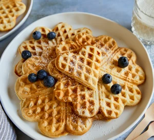

Vegan Waffles

Image and recipe source: BBC Good Food
Good people deserve good things, make yourself this scrumptious and delicious treat and for the weekend. You earned this one.
Recipe
Ingredients
- 500g plain flours
- 2tbsp baking powder
- 125g vegan butter, plus extra for the waffle iron
- 125g caster sugar
- 250ml soy milk
Method
- Mix the flour and baking powder with ½ tsp salt in a bowl. Mix the vegan butter with the caster sugar in a separate bowl.
Combine the soy milk with 175 ml water in a jug. Pour this gradually into the dry ingredients, continually stirring, then
add the butter and sugar mixture and keep stirring to form a smooth batter. Add a little more water or soy milk if the mixture
is very thick – you should be able to spoon it out. Heat the waffle iron. Butter both sides of the waffle iron.
- Spoon about 3 tbsp of the batter into the hot waffle iron, close and cook for 4-6 mins until golden brown (the time will vary depending on your waffle iron). Remove the finished waffle and cook the rest of the batter in the same way. The dough makes about 10-12 vegan waffles. Serve straightaway with your favourite toppings.